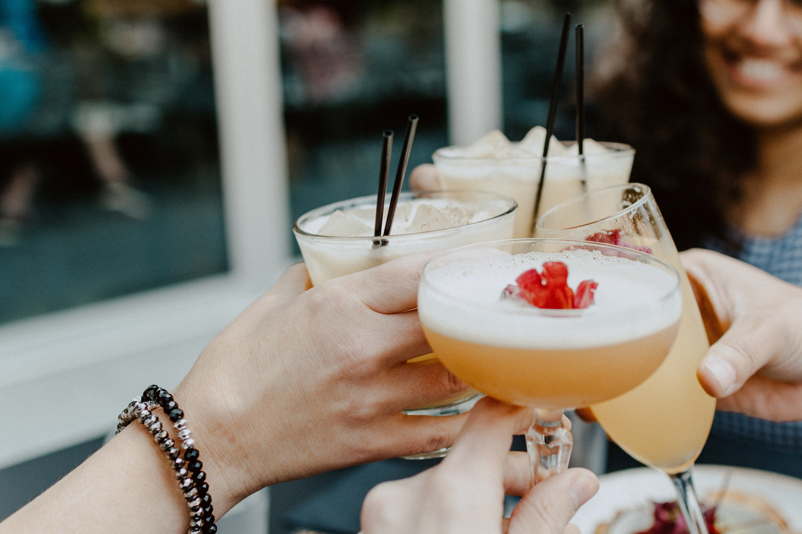

Pines of Nowhere is located in the Port Covington Area of Baltimore. We offer the freshest seafood, regional specialties, and the best steamed crabs in town. Our menu serves up something for everyone from deck fries to our famous crab cakes. The waterfront deck is the perfect spot whether you want to enjoy a craft beer or orange crush during happy hour or bring the whole family in for dinner. Open year round for lunch and dinner.
